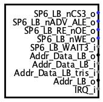

Repetar Local Bus
Repetar Local Bus
| Library: | Input/Output |
| Introduced: | 3.0.0 |
| Appearance: |
 |
Behavior
The Reptar Local Bus component is a specialized interface block designed to connect Logisim-Evolution logic circuits with the physical hardware bus of the Reptar development board (based on the Spartan-6 FPGA).
Important Note: Software simulation of the Reptar Local Bus directly within Logisim-Evolution is not supported. This component is intended solely for VHDL code generation and circuit synthesis onto the physical FPGA board. During simulation runs in Logisim-Evolution, signals at the component's ports are not processed.
Pins (all pins are located on the right edge)
- SP6_LB_nCS3_o (output, bit width 1):
- Chip Select 3 signal (active low) driven from the bus to the circuit.
- SP6_LB_nADV_ALE_o (output, bit width 1):
- Address Valid / Address Latch Enable signal (active low) driven from the bus to the circuit.
- SP6_LB_RE_nOE_o (output, bit width 1):
- Read Enable / Output Enable signal (active low) driven from the bus to the circuit.
- SP6_LB_nWE_o (output, bit width 1):
- Write Enable signal (active low) driven from the bus to the circuit.
- SP6_LB_WAIT3_i (input, bit width 1):
- Wait 3 input signal driven from the circuit to the bus.
- Addr_Data_LB_o (output, bit width 16):
- 16-bit address/data output bus from the local bus to the circuit.
- Addr_Data_LB_i (input, bit width 16):
- 16-bit address/data input bus from the circuit to the local bus.
- Addr_Data_LB_tris_i (input, bit width 1):
- Controls the high-impedance (tri-state) mode of the address/data bus.
- Addr_LB_o (output, bit width 9):
- 9-bit address output bus from the local bus to the circuit.
- IRQ_i (input, bit width 1):
- Interrupt Request signal driven from the circuit to the local bus.
Attributes
- Label
- The name of the local bus in the generated VHDL code (defaults to "LocalBus", cannot be changed).
Back to Library Reference